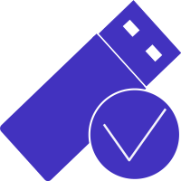

<md-dialog ng-cloak>
    <md-toolbar>
        <div class="md-toolbar-tools">
            <h2>Delete Device</h2>
            <span flex></span>
        </div>
    </md-toolbar>
    <md-dialog-content>
        <div class="login-icon-buttons">
            <a ng-repeat="(key,info) in cmod.keys" class="login-icon-button" ng-click="cmod.deleteDevice(keyId)">
                <div ng-switch on="info.type">
                    
                    
                </div>
                <p>{{info.name}}</p>
            </a>
        </div>
        <button class="ui button" ng-click="cmod.test()"></button>
    </md-dialog-content>

    <md-dialog-actions>
        <div class="flex-extender"></div>
        <button class="ui button" ng-click="cmod.cancel()">Cancel</button>
        <button class="ui blue button" ng-click="cmod.deleteDevice(keyID)">Accept</button>
    </md-dialog-actions>
</md-dialog>